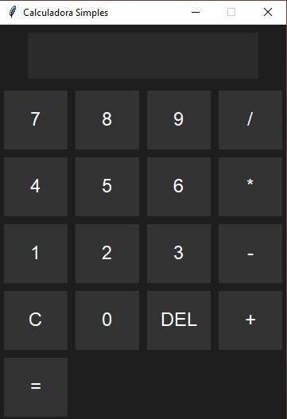
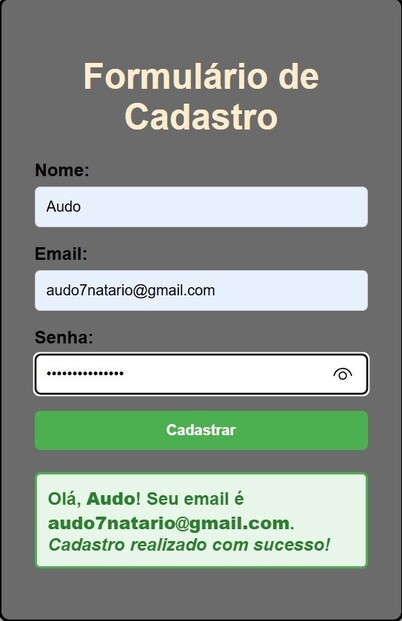

Linguagens que estou aprendendo:


Projetos:
-- Calculadora Simples --
Este é um projeto de calculadora desenvolvida em Python. Ela realiza operações básicas como soma, subtração, multiplicação e divisão. O foco do projeto foi praticar lógica de programação, manipulação de entrada do usuário e estruturação de funções para um código organizado e fácil de entender.
-- Página de Cadastro --
Este projeto é uma página de cadastro responsiva desenvolvida com HTML, CSS e JavaScript. A interface foi criada com foco em simplicidade e usabilidade, permitindo que o usuário preencha campos como nome, e-mail e senha de forma intuitiva.
Hobbies e Jogos
Bom, além de estudar e desenvolver projetos, eu também gosto muito de jogos. Sempre gostei de jogar e, com o tempo, fui ficando cada vez mais curioso sobre como eles são feitos, como funcionam por trás das telas. E foi isso que despertou mais ainda mais meu interesse pela programação. Por isso, resolvi compartilhar aqui alguns dos meus jogos favoritos: